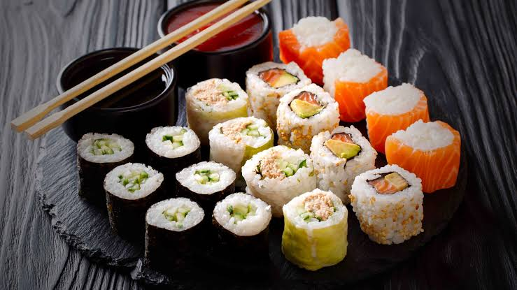

Tacos
Los tacos son uno de los platillos más representativos de México. Se preparan con diferentes ingredientes y pueden encontrarse en distintas regiones del país.

Pasta
La pasta es uno de los alimentos más conocidos de la gastronomía italiana. Existen diferentes tipos y formas de prepararla, acompañándola con diversas salsas e ingredientes.

Sushi
El sushi es un platillo tradicional de Japón que combina arroz preparado con diferentes ingredientes. Su presentación y variedad lo han convertido en un alimento conocido alrededor del mundo.

Mole
El mole es un platillo tradicional de México elaborado con una combinación de ingredientes y especias. Existen diferentes variedades de mole dependiendo de la región.